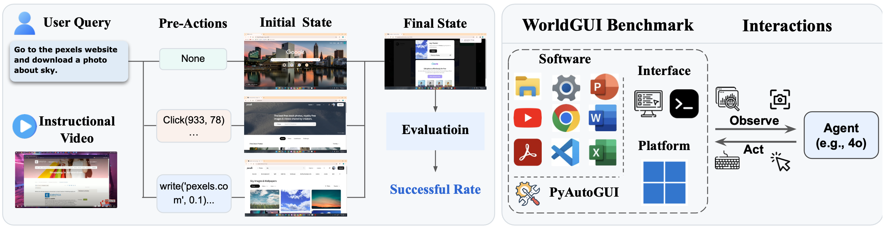
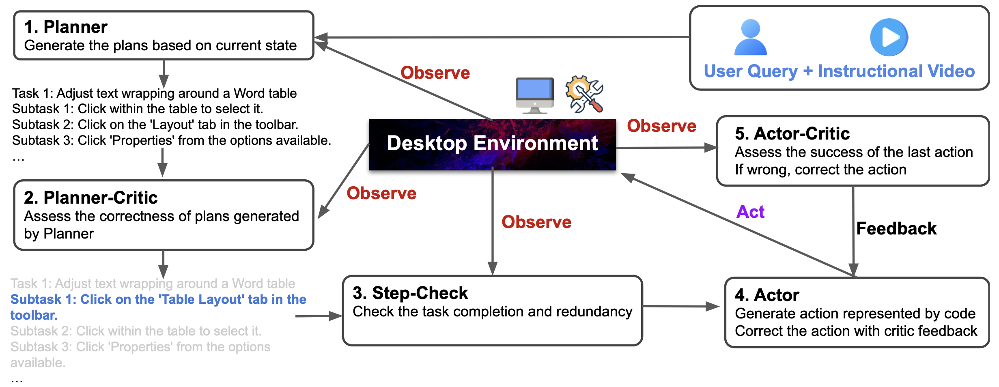

Benchmark Overview

WorldGUI: An illustration of our proposed real-world GUI benchmark. The left shows that for each task, WorldGUI provides a user query, instructional video, and pre-actions. The pre-actions lead to different initial states. The key characteristic of our WorldGUI is the various initial states of the same task to stimulate the real-world testing process. The right shows the software included in our benchmark and the interactions about testing the agents in our GUI environment.
Agent Overview

An overview of GUI-Thinker, includes five proposed components: Planner, Planner-Critic, Step-Check, Actor, and Actor-Critic. The Planner module receives the user query and an instructional video as input and generates an initial plan for the Planner-Critic process. This plan is then refined and executed step by step. Before each step is passed to the Actor module, it undergoes a Step-Check. After the Actor produces an action, the Actor-Critic module iteratively verifies the completion of the action and makes corrections if needed.
Citation
@misc{zhao2025worldguidynamictestingcomprehensive,
title={WorldGUI: Dynamic Testing for Comprehensive Desktop GUI Automation},
author={Henry Hengyuan Zhao and Difei Gao and Mike Zheng Shou},
year={2025},
eprint={2502.08047},
archivePrefix={arXiv},
primaryClass={cs.AI},
url={https://arxiv.org/abs/2502.08047},
}
Acknowledge: Thanks to Carlos & John for this webpage template. Also thanks to the SWE-bench team and their benchmark https://www.swebench.com/multimodal.html.